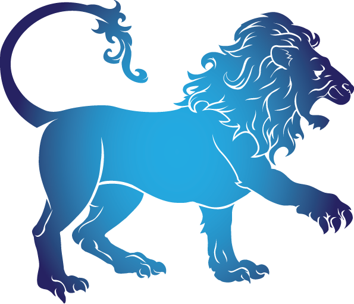

- Date Range : JULY 23 - AUGUST 22
- Element : Fire
- Color : Orange
- Quality : Fixed
- Day : Sunday
- Ruling planet : Sun
- Ruling house : Fifth
- Lucky number : 1, 3, 10, 19
- Lucky gem : Peridot
- Top love Matches : Libra
LEO (JULY 23 - AUGUST 22)

Leo Personality Traits
Strengths : Creative, passionate, generous, warm-hearted, cheerful, humorous
Weaknesses : Arrogant, stubborn, self-centered, lazy, inflexible
Leo likes : Theater, taking holidays, being admired, expensive things, bright colors, fun with friends
Leo dislike : Being ignored, facing difficult reality, not being treated like a king or queen
Individuals born under the sign of Leo are known for their natural leadership abilities. They possess qualities such as creativity, self confidence, dominance and a strong presence that is hard to resist.
Leos are capable of achieving anything they set their minds to in
all aspects of their lives. The strength of a Leo lies in their
"king of the jungle" status. They are typically generous and loyal,
which enables them to have many friends. Their self confidence and
attractiveness make them capable of bringing different groups of
people together and leading them towards a common goal. Additionally
Leos have a healthy sense of humor which makes it easier for them to
collaborate with others.
Leos are associated with the element of Fire, along with Aries and
Sagittarius. This makes them warm hearted, and they love to enjoy
life and have fun. They are able to use their intellect to solve
even the most challenging problems and will often take the
initiative to resolve complicated situations. Ruled by the Sun, Leos
revere this fiery entity both literally and metaphorically. They are
constantly in search of self awareness and personal growth. They are
aware of their desires and personalities, and they are comfortable
asking for what they need. However in their pursuit of personal gain
or status, they may unconsciously neglect the needs of others. If a
Leo becomes too attached to their achievements and how others
perceive them, they may become vulnerable and easily taken down.
Leo Love Style
Passionate, intense, and fiery, Leo loves hard. For Leos, love itself—whether falling in love, thinking about love, making love—is one of their favorite things in the world. A busy Lion will always make sure that there's plenty of time for passion in his or her life.
Falling in love is easy for Lions. But finding a person who can
match them and staying in love can be tough. Leo loves flirting and
dating, and has no problem penciling new names onto the calendar.
This sign loves the rollercoaster that is romance, from butterflies
before the first date to catching their breath after the first time
in bed. But while Lions thrive on the novelty of dating, they can be
easily disappointed if their date fails to live up to their outsize
expectations. That's why Leos occasionally finds true love with
partners they may have dated or broken up with in the past.
In the bedroom, Leo is playful, and frequently imagines that he or
she is performing. Your Leo lover may want to capture your shared
carnal experience on video or, at the very least, have a few
strategically placed mirrors in the room. Leo loves dirty talk
(especially praise for a job well done). Giving and generous when it
comes to sex, Leo can spend hours pleasuring a partner—as long as
the partner returns the favor.
Leo Friendship Style
"Friends" is one of Leo's favorite words, and Lions are known for collecting friends—but not in a transactional way. Leo genuinely adores other people, and innately gets that the more people you know, the easier life can be. Leos easily hand out their phone number, are quick to follow or DM on Instagram, and will invite you to their happy hour five minutes after meeting you. But getting to know a Leo on a deeper level can be challenging. For starters, it's tough to pin down someone with that kind of social schedule. And although Lions are friendly, they won't share their inner emotional life until they're really close with you. A Leo is a valuable ally in your social circle, and when he or she does reveal secrets, listen up and feel honored!
Three reasons why Leos make great friends
- Generous to a fault, Leo will always surprise you with spontaneous gifts, whether it's a just a latte or something bigger.
- This sign is the life of a party, which means that you're automatically an A-lister when you're spending time with a Leo.
- A master connector, Leo will never leave your life. You may hear from a busy Lion only once in a decade, but in minutes you'll be laughing about old times and catching up together.
Leos are amazing! Their name says it all:
L for leaders
E for energetic
O for optimistic
Leo career, money & success traits
Leo's greatest career strength: Passion. Leos bring fiery intensity to everything they do, including work, and when they believe in what they're doing, there's no stopping them.
Leo's greatest career challenge: Teamwork. Lions like to do things themselves, and they have a certain way of getting things done. Letting others take the reins can be tough.
Leos are highly energetic and tend to always be busy, regardless of
their employment needs. They are ambitious, creative, and
optimistic. Once they dedicate themselves to their work, they strive
for perfection. The best possible situation for a Leo is to be their
own boss or to manage others with minimal control from superiors.
Jobs that allow for open expression of artistic talent, such as
acting and entertainment, are ideal for Leos. Management, education,
and politics are also good fits, as well as anything that puts them
in a leadership position, which naturally suits them.
Leos love to be surrounded by modern and trendy things.
Although money comes easily to them, they may not always spend it
responsibly compared to other zodiac signs. They are extremely
generous and may provide financial help to many friends, supporting
them through difficult times. Although this may not always be wise,
it always makes Leos feel good.
Motto
"If you know the way, go the way and show the way—you're a leader."
Famous Leos

Barack Obama
(44th U.S President)
August 4, 1961
Leo
August 4, 1961
Leo

Arnold Schwarzenegger
(Actor)
July 30, 1947
Leo
July 30, 1947
Leo

Jennifer Lopez
(Singer)
July 24, 1969
Leo
July 24, 1969
Leo
Join Our Daily Overview
Your Astrological overview guides you on what to look out for and how to act in tune with the stars and planets each day.
Was this page helpful?
Do not selling My personal info!
© Copyright-2023 -All right reserved.